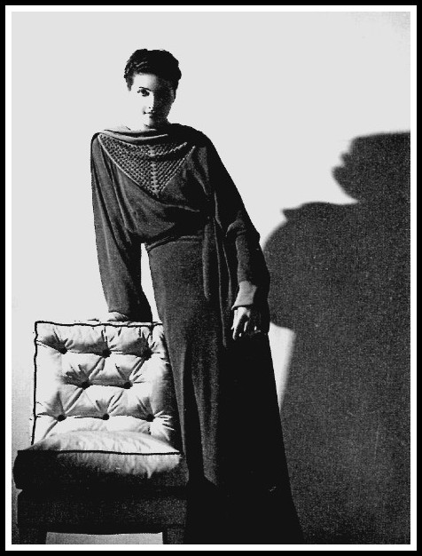

Dora Maar
INICIO
BIOGRAFÍA
BIOGRAFÍA
VIDA
CARRERA
OBRAS
OBRAS
SERIE
TÉCNICA
ESTILO
ESTILO
LEGADO
GALERÍA
JUEGO
CONTACTO
DESARROLLO
Dora Maar, Lirios Arum, 1930 | Dora Maar, Asia, 1934

Dora Maar, fotografía de moda, principios-mediados de los años 30
Dora Maar legs 1935
Modelo con estrella, 1936
Dora Maar. Nusch Eluard, hacia 1935.
Dora Maar en el agua
Retrato a una modelo
Dora Maar obra con Man ray
Dora Maar Autoretrato
Dora Maar manos de concha
Dora Maar El Simulador
Dora Maar. Nusch Eluard
Dora Maar. 29 rue d’Astorg, hacia 1936.
Previous
Next